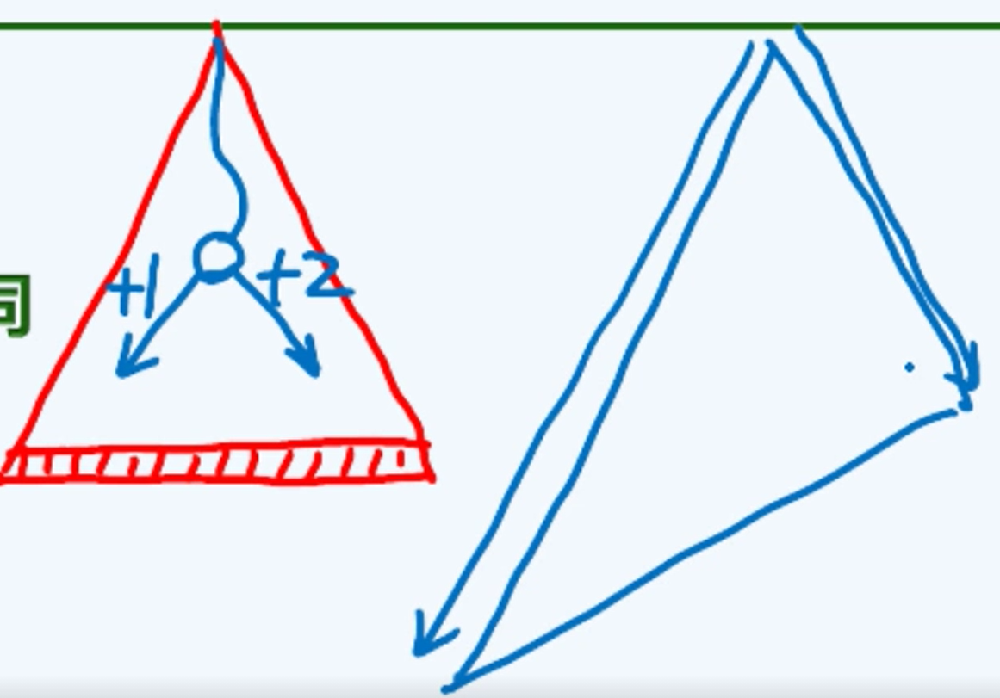

邓公学堂在线MOOC+清华《数据结构第三版》的一些记录。本篇为向量部分。
抽象数据类型ADT与数据结构DS不同，后者包含着算法。
向量是对数组这种数据类型的抽象和泛化，元素的顺序使用秩Rank来表示。
继承的时候，同样分为public protected private继承，次时修饰符modifier代表派生类的被访问权限的上限（在此假定权限定义高低为public > protected > private）即如果private继承，类里面所有成员变量和成员函数都会变成private：如果public继承，保持不变；如果protected继承，只会将原先是public的降低至protected。
1 |
|
扩容与缩容
装填因子$\lambda=\frac{_size}{_capacity}$表示目前向量有效元素的比例，一般在接近满的时候会扩容，当有效元素小于容量1/4的时候会缩容。
扩容的方法包括倍增式扩容以及固定增量扩容两种方式。
1 |
|
对比这两种扩容方式，倍增式扩容在空间利用率上相对较低（但也大于50%），但是在时间复杂度上平摊只需O（1）的时间。相比固定增量式扩容需要O（n）的时间，这种空间上的不足是可以接受的。
为什么倍增式扩容可以平摊到O(1)，而固定式扩容还是O(n)呢，原因在于不论每次输入的量是多大，只要之后每次这个输入量保持不变，倍增式扩容都会迅速的将capacity扩展到比这个输入量大很多，使得扩容的频率迅速下降，有一种自适应的能力（输入的越猛，增长的越猛）。但是固定式扩容，一旦输入大于固定增量，则每次输入都会产生扩容操作，导致复杂度一直都差不多是O(n)，没有一个自我调节的能力。
Average Running Time vs. amortized running time
- 前面的是平均时间，指的是算法按照概率分布的期望运行时间，又可以称作expected running time，对实际运行情况的模拟不够好。割裂了各个操作的相关性和连贯性。
- 后面的叫做分摊时间，假定的是对向量做足够多次操作后，时间分摊至每一次操作的成本，更具有现实意义。
一个习题与解答
Is it possible to replace:是否可以将视频里向量扩容代码中的：
for (int i = 0; i < _size; i++) _elem[i] = oldElem[i];
in the vector expansion code in the video with: 替代为：
memcpy(_elem, oldElem, _size * sizeof(T));
P.S.This question involves the relevant knowledge of C++ P.S.本题涉及C++的相关知识
解析：
When T is a non-base type and there is a corresponding assignment operator to perform deep copy, the previous section of code calls the assignment operator, and the latter section can only perform shallow copy. 当T为非基本类型且有对应的赋值运算符以执行深复制时，前一段代码会调用赋值运算符，而后一段只能进行浅复制。
缩容的实现与扩容基本一致，先比较size和capacity，再复制元素到新的elem中
1 |
|
操作符[]重载
为了获得下标式的元素引用方式A[i]，将向量操作符重载
1 |
|
插入insert(Rank r, T e)
1 |
|
区间删除remove(Rank lo, Rank hi)
整体左移覆盖要删除的部分
1 |
|
单个元素的删除可以看作区间删除的特例，但是区间删除不能看作单元素删除的特例，因为单独删除单元素也会有最坏O（n）的移动，已经和区间删除的复杂度相当了，如果反复执行这一过程会导致O（n^2）的复杂度，实际上是不可行的。
查找 find(T const& e, Rank lo, Rank hi)
从后向前找，返回秩最大的符合要求的元素的秩。若没有返回-1.
1 | template <typename T> Rank Vector<T> :: find(T const & e, Rank lo, Rank hi){ |
最好情况O（1），最坏情况O（n），这种称为 输入敏感 问题
遍历
使用函数指针或者函数对象visit作为traverse的参数，从而实现对向量元素的遍历和操作。函数对象相比前者的应用范围更加广泛。
1 | template <typename T> void Vector<T> ::traverse(void(*visit) (T&)){ |
在这里不理解什么是函数对象和函数指针，不会使用
As a function object class XXX, which of the following member functions must be explicitly defined: 作为一个函数对象的类XXX，它必须显式定义以下哪个成员函数
For a function object, () is an operator used to perform a function call 对于函数对象来说，()是用于执行函数调用的操作符
有序向量
无序的向量元素之间只能判定是否相等，而有序的元素则能进行比较。
一般而言，如果能够将无序输入向量有序化，则能大幅提升算法的性能，并且有序化所带来的复杂度将小于算法优化减少的复杂度，对于算法的表现是有利的。
有序性甄别
使用计算邻接无序对数目的方式来判断
1 |
|
低效率唯一化
没有充分利用有序化序列，调用太多次remove函数会导致效率低下
1 | template <typename T> int Vector<T> :: uniquify(){ |
高效率唯一化
1 |
|
查找与排序算法
二分查找
复杂度约为1.5log（N） 仍有改进空间
Fibonacci查找
二分查找如果把各种实例画成图似乎是平衡的，但是实际上由于程序每次判断大小时都先判断中点左部，再判断中点右部，导致向左和向右的比较成本不一样（1次 vs. 2次）也因此实际的算法是不平衡的，算法对于[lo,mi)这个区间的元素的查找起来比 (mi,hi)区间更为快速。
为了缓解这个问题，寻求最优解，可以考虑人为的将这个图左右两侧长度设置为不一样的，左边既然搜索的快区间就长一点，右边既然慢就降低难度让它短一点，来追求左右侧的平衡，并尝试是否为最优查找。

两者的区别只在于mi点的选取，fibonacci取在了黄金分割点。
1 |
|
插值查找
Interpolation Search
当一个序列有了近似的规律的时候，可以利用插值的方式确定近似的区间，就好比翻查字典的时候如果是按照A-Z的分布，去寻找W这个部分的单词肯定不会从中间二分查找，而是会按照近似比例的方法去确定一个大致位置。
- 已知lo和hi位置的值，还知道e，计算出e对应的大概位置
- 比较位置元素和e的大小，确定下一段区间
- 再次计算e的大概位置
如果输入数据不符合均匀独立分布，会变成病态问题，导致时间复杂度升到O（n）
每经过一次比较，插值查找就可以将查找范围从n缩小至$\sqrt{n}$
从二进制字宽方面考虑，一个数值为n的值，它用二进制表示的字宽就是$\log{n}$，而当范围缩小为$\sqrt{n}$时，对应的二进制字宽折半，变成$\frac{1}{2}\log{n}$，因而从字宽角度考虑让字宽小于1位所需要的时间就是$\log\log{n}$
缺点
1. 容易受到病态数据影响导致复杂度升高O（n）
2. 需要计算乘法和除法，相比加减法需要的运算更为复杂
综合对比
binary search；fibonacci search；interpolation search各有特点
使用建议为结合使用：
- 大数据用interpolation迅速减小规模
- 中等数据使用binary搜索
- 小数据直接遍历
排序
1 |
|
气泡排序
最简单的二重遍历bubblesort没有什么意思，这里增加了一个sorted标志位，用于提前结束bubblesort过程，减少无谓的遍历。
1 |
|
进一步的改进，挪动bubble中hi的位置，进而减少后部已排列元素的扫描
1 | template <typename T> void Vector<T> :: bubbleSort(Rank lo, Rank hi){ |
算法的稳定性：算法排序前后相同数值的元素大小不变
归并排序
归并排序是一个古老/经典的算法，由冯诺依曼提出，主要思想就是分而治之，可以参考之前算法4里面的文章。
排序：归并排序